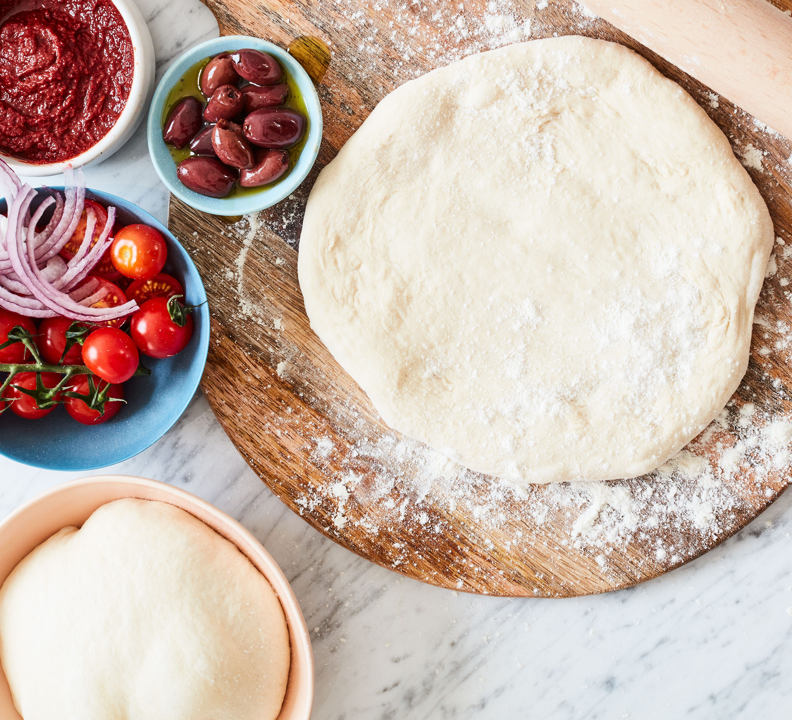

Pizza Dough
Home Page

Description
This recipe almost requires no pre amble or explanation. It's PIZZA DOUGH enough said.
Me, Liv, Caitlin and Lily have used this recipe many times. It is originally from taste
dot com dot au but we dont support murdoch so i'm recreating it here ~with no ads~
Ingredients
- 1 1/2 cups warm water
- Pinch of caster sugar
- 2 tsp dried yeast
- 4 cups of plain flour
- 1 tsp salt
- 1/4 cup olive oil
- extra oil and flour for dusting and brushing
Instructions
- Combine the water, sugar and yeast in a small bowl. Set aside for 5 minutes or until foamy.
Combine the flour and salt in a large bowl and make a well in the centre. Add the yeast mixture
and the olive oil. Use a round-bladed knife in a cutting motion to mix until the mixture is combined.
Use your hands to bring the dough together in the bowl.
- Brush a bowl lightly with the extra oil. Turn the dough onto a lightly floured surface using extra flour
and knead for 10 minutes or until smooth and elastic. Place in the prepared bowl and turn to coat in the oil.
Cover with plastic wrap and set aside in a warm, draught-free place to rise for 30 minutes or until dough doubles
in size.
- Dust work surface again with extra flour. Knead dough and form into a long cylinder. Divide into thirds.
Use a rolling pin to roll each third into a 20cm disc, then add your favourite toppings and bake.
Topping Ideas
- Tomato sauce, Potato, rosemary, mozarella, olive oil & flaky sea salt
- Livs vegetariana: tomato sauce, capsicum, mushroom, olives and pineapple
- Vegetarian hawaiian: shredded tofu marianated in bbq sauce, mozarella and pineapple